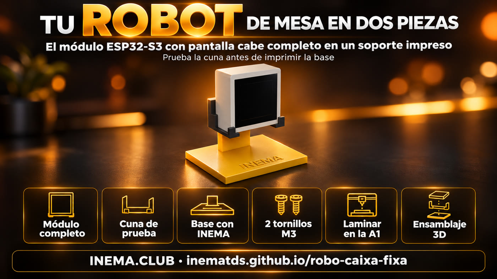
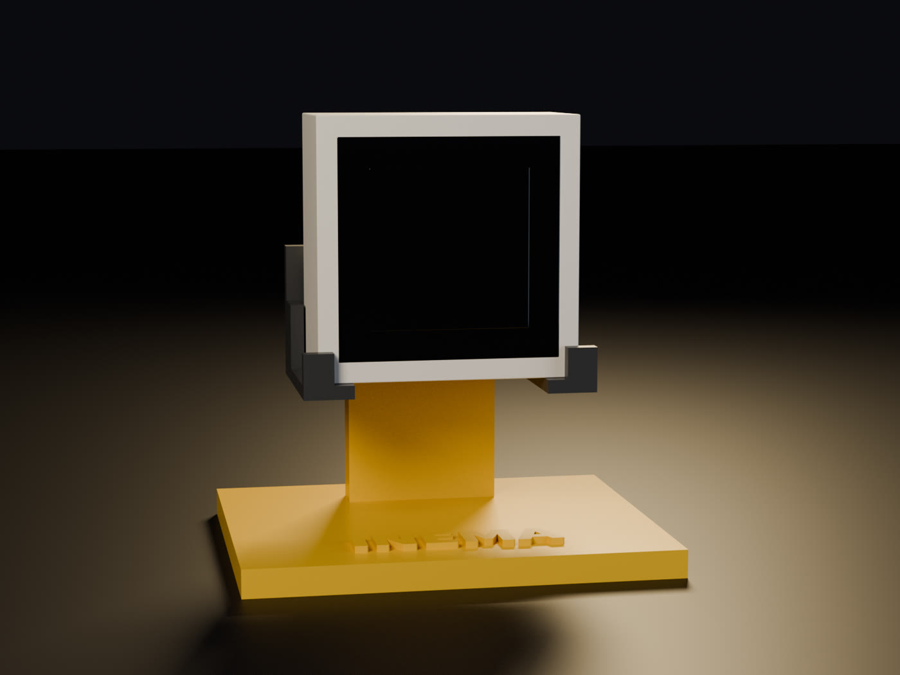
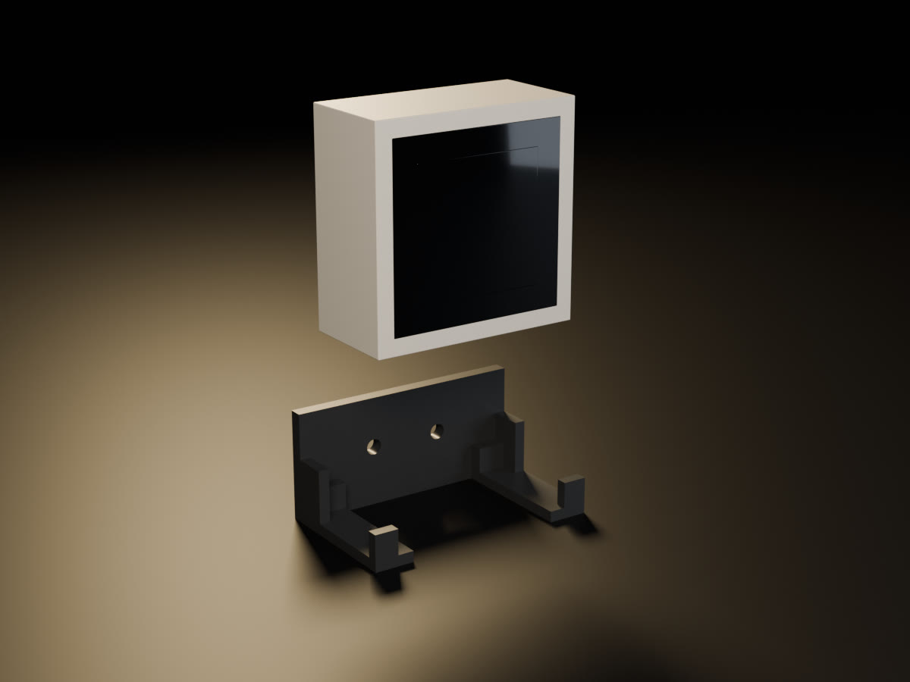

Tu módulo con pantalla se convierte en la cabeza de un robot de escritorio.
Los robots impresos suelen complicarse con motores, engranajes y soldaduras. En Robô caixa fixa, la cabeza es fija: el módulo entra completo en un soporte de dos piezas y puedes probar el encaje con una pieza pequeña antes de gastar filamento en la base. Los archivos de estudio ya sirven para imprimir la cuna de prueba; la cara en la pantalla vendrá después, por software.
Ilustración generada por IA. El soporte aún no se imprimió; las imágenes del modelo real están más abajo.
2piezas impresas
2 + 2tornillos M3 y tuercas
0motores ni soldaduras
76 × 64mm de base
78,4mm de altura montado
38,3cm³ de volumen de las piezas
En resumen
Quienes quieren un robot de escritorio suelen encontrarse con la parte mecánica: servos, engranajes y cables. Robô caixa fixa es un soporte impreso en 3D que convierte el módulo Waveshare ESP32-S3 con pantalla de 1,54 pulgadas en una cabeza fija sobre una base. El módulo queda completo, con su carcasa y electrónica de fábrica. Necesitas una impresora 3D, Bambu Studio, filamento, el módulo y dos tornillos con tuercas. El diseño se revisó en la computadora, pero aún no se imprimió. La cara en la pantalla y la conversación con IA todavía no existen: esta guía cubre solo el soporte.

Ilustración generada por IA: todavía no se imprimió ninguna pieza. Las formas exactas aparecen en las imágenes del modelo real justo abajo.
Video
Entiende en 2 minutos
Video en portugués. Prototipo: el soporte aún no se imprimió, y la cara y la conversación con IA todavía no existen.
La pantalla, el audio y la batería opcional siguen dentro de la carcasa original. El soporte solo sujeta el conjunto: el frente queda libre para tocar la pantalla y los botones de arriba siguen al alcance.
Render del archivo CAD real. La base y la cuna son las piezas que imprimes. El módulo aparece simplificado (caja de 46 × 46 × 22,5 mm), sin cada botón ni orificio.
Base con columna
Placa de 76 × 64 mm con una columna atrás; 54 mm de altura total. ARCKHÉ en relieve al frente, del mismo color y en la misma pieza.
Cuna
Pieza pequeña (51,6 × 24 × 31,9 mm) que sujeta el módulo por los lados y por abajo. Es la primera que debes imprimir para probar el encaje.
Módulo de fábrica
Waveshare ESP32-S3 con pantalla de 1,54″. Entra y sale por arriba, sin desmontarlo ni soldar.

De frente: la pantalla queda completamente a la vista, sin que el soporte la cubra.Por detrás: las dos tuercas M3 quedan en la parte trasera de la columna.
Cómo encaja
Cinco partes, sin pegamento
La vista explotada separa las partes en el orden de montaje. Los tornillos atraviesan la cuna y la columna; la cabeza de cada uno queda oculta detrás del módulo.
Vista explotada del modelo real. Tornillos y tuercas representados de forma sencilla.
Módulo ESP32-S3 con pantallaBaja por arriba hasta apoyarse en la cuna. Se mantiene en su sitio por su propio peso.
Cuna (imprime primero)Sujeta los lados y la parte inferior del módulo, con 0,4 mm de holgura a cada lado.
2 tornillos M3 × 16Entran por el frente de la cuna. La cabeza queda en un espacio de 4 mm detrás del módulo.
Base con columna e ARCKHÉLa columna recibe la cuna; los dos orificios quedan alineados con los de la cuna.
2 tuercas M3Aprietan el conjunto por la parte trasera de la columna.
Modelo 3D
Gira el robot en tus manos
Este es el archivo de montaje del proyecto (el mismo GLB de la descarga). Arrastra para girarlo y usa dos dedos o la rueda del mouse para acercar la imagen. Colores del archivo: base amarilla, cuna gris, módulo blanco, área de la pantalla en azul.
Arrastra para girar
Si no aparece el modelo, descarga el GLB y ábrelo en cualquier visor 3D (en Windows, el Visor 3D ya puede abrirlo).
Detalle del relieve, render del archivo de la base.
La marca
ARCKHÉ en relieve, en la misma pieza
Las letras forman parte de la base, con 1,2 mm de altura y 36 mm de ancho. No hay cambio de color, pegamento ni piezas adicionales: todo se imprime con un solo filamento.
Contorno engrosado 0,2 mm a cada lado (trazo 0,4 mm más grueso) para que la letra no desaparezca al imprimir.
Texto alejado del borde frontal: las letras empiezan a unos 7,6 mm de él.
Malla comprobada como cerrada y de un solo cuerpo después de unirla.
Medidas
Cuánto espacio ocupa en la mesa
Vistas frontal y lateral del modelo real, a la misma escala. Las medidas provienen del archivo CAD y del diseño oficial del módulo.
Frente: ancho de la base y del módulo, altura montada.Lateral: profundidad de la base y grosor del módulo. El frente queda a la izquierda.
Medida
Valor
Origen
Módulo completo
46 × 46 × 22,5 mm
Diseño oficial de Waveshare
Área de imagen
28,12 × 28,12 mm (240 × 240 píxeles)
Diseño oficial y etiqueta del módulo
Holgura lateral
0,4 mm a cada lado
Diseño; aún no calibrada en la impresora
Holgura detrás del módulo
0,8 mm
Diseño
Espacio para la cabeza de los tornillos
4 mm
Diseño
Base
76 × 64 × 54 mm (con columna)
Archivo STL
Cuna
51,6 × 24 × 31,9 mm
Archivo STL
El módulo
Qué versión comprar
El anuncio elegido es el ESP32-S3 con pantalla de 1,54″. La etiqueta trasera indica WAVESHARE, pantalla ST7789 de 240 × 240 píxeles, 8 MB de PSRAM y 16 MB de flash. Se vende en cuatro versiones:
Modelo
Pantalla táctil
Batería
ESP32-S3-LCD-1.54-EN
No
No
ESP32-S3-LCD-1.54
No
Sí
ESP32-S3-Touch-LCD-1.54-EN
Sí
No
ESP32-S3-Touch-LCD-1.54
Sí
Sí
El diseño oficial con medidas muestra la versión táctil. Las versiones sin pantalla táctil o sin batería pueden tener una carcasa de otro grosor, y no hay medidas oficiales para cada una. Mide la tuya antes de imprimir la base. No la confundas con M5Stack CoreS3 Lite ni con SpotPear Muma: son otras placas, con otras medidas.
Que el anuncio diga “IA DeepSeek” no demuestra que la IA funcione en la placa. Este proyecto entrega solo la parte física. El programa de la cara y la conversación por voz quedan para una etapa futura.
Parte técnica
El kit: para quienes van a imprimir y montar
No necesitas esta parte para entender lo anterior. Para imprimir, sigue este orden: material, cuna, prueba, base y montaje.
Qué necesitas
Todo común, sin inserto, servo ni pieza especial.
1×
Módulo ESP32-S3 1,54″
Cualquiera de las cuatro versiones; mide la carcasa.
2×
Tornillo M3 × 16
Cabeza de hasta 3 mm de altura, como el allen DIN 912 (el espacio es de 4 mm). Comprueba el largo en la mesa de trabajo.
2×
Tuerca M3
Tuerca hexagonal común.
PETG
Filamento
Propuesta inicial, aún sin probar. Un solo color.
A1
Impresora 3D
Guía escrita para Bambu Lab A1, boquilla de 0,4 mm.
gratis
Bambu Studio
Programa que prepara el STL para la impresora.
1×
Llave para M3
Del tipo adecuado para la cabeza de tu tornillo.
ideal
Calibrador
Para medir la carcasa si la cuna queda apretada.
Para encender el módulo más adelante, usa su cable USB y una fuente USB común. El soporte no incluye alimentación propia.
Descarga primero la cuna
Un archivo STL es el modelo 3D. Aún hay que prepararlo para tu impresora; no contiene instrucciones de impresión listas.
Así llegan los STL a la mesa de 256 mm de la A1: la base apoyada en la plataforma y la cuna apoyada por la parte trasera. No gires las piezas.
El volumen indicado corresponde a las piezas macizas; con 25% de relleno se usa menos filamento, y Bambu Studio muestra el valor real al preparar el archivo. El ZIP no incluye G-code ni un perfil 3MF validado; las instrucciones incluidas están en portugués. Consulta el informe de verificación (JSON).
Prepara el archivo en Bambu Studio
Preparar el archivo significa convertir el modelo en capas y movimientos para la impresora. Lo haces en la computadora.
Ajuste
Punto de partida (aún sin probar)
Dónde está
Impresora
Bambu Lab A1, boquilla de 0,4 mm
Arriba a la izquierda
Filamento
PETG de tu marca o Generic PETG
Panel Filamento
Altura de capa
0,20 mm
Calidad (Quality)
Paredes
4
Resistencia (Strength) → Wall loops
Relleno
25%
Resistencia → Sparse infill density
Soporte
Activado, Normal automático
Soporte (Support)
Escala
100%, sin girar la pieza
Mesa virtual
1
Elige tu impresora
Abre Bambu Studio. Selecciona Bambu Lab A1, boquilla de 0,4 mm, la placa instalada y el filamento que tienes. Si necesitas instalarlo, usa la descarga oficial.
2
Abre solo la cuna
Arrastra la cuna a la mesa virtual y déjala al 100%. Ya viene apoyada por la parte trasera: no la gires para que quede como aparece montada. Tamaño esperado: 51,6 × 24 × 31,9 mm. Una medida muy distinta indica que la escala o la orientación son incorrectas.
3
Configura los ajustes de la tabla
Las paredes forman el contorno de la pieza; el relleno es la estructura interior. El soporte es una estructura temporal que sostiene las zonas que quedarían sin plástico debajo y se retira después. Si algún campo está oculto, activa el modo Avanzado. Si tienes PETG en la impresora, no selecciones PLA en el programa.
4
Haz clic en Slice Plate
En la vista previa, recorre las capas: la primera debe estar apoyada por completo en la mesa, nada debe empezar en el aire y debe haber soporte donde haga falta. El programa muestra el tiempo y el filamento reales. Si aparece una advertencia sobre la malla o la orientación, detente y revisa antes de imprimir.
5
Envía el archivo a la A1
Con la tarjeta microSD: Archivo → Exportar → Exportar archivo laminado de la placa (File → Export → Export plate sliced file). Copia a la tarjeta el archivo que termina en .gcode.3mf, no el STL. En la A1, abre la lista de la tarjeta, elige la pieza y comprueba la placa y el filamento antes de empezar.
6
Prueba la cuna antes de la base
Deja que se enfríe y retira el soporte. Con el módulo apagado, encájalo por arriba sin hacer fuerza sobre la pantalla. Revisa los botones, el conector USB y las salidas de sonido. Si queda apretado, detente: no imprimas la base; mide el ancho y el grosor de la carcasa con el calibrador y abre una solicitud de ajuste de la cuna en GitHub con esas medidas (el formulario ya incluye los campos; necesitas una cuenta gratuita de GitHub). No aumentes la escala: eso cambia la distancia entre los orificios de los tornillos.
7
Solo entonces imprime la base
Abre el segundo STL, apoyado en la plataforma, y repite el proceso. ARCKHÉ ya forma parte de la pieza: usa un solo color.
Arma el soporte en cuatro pasos
Arma el soporte antes de colocar el módulo. Las imágenes corresponden al modelo real; los tornillos y las tuercas están simplificados.

Prueba la cunaCon la cuna impresa y suelta, encaja el módulo por arriba. Debe deslizarse sin hacer fuerza.Atornilla a la columnaApoya la cuna en la parte frontal de la columna, pasa los dos M3 × 16 por delante y enrosca las tuercas por detrás.Coloca el móduloCon el soporte firme, baja el módulo por arriba hasta apoyarlo en el fondo de la cuna.Revisa la parte traseraTuercas apretadas, pantalla libre al frente y cable USB sin dobleces pronunciados. Aún hay que comprobar la posición real del conector.
El módulo se mantiene en su sitio por su propio peso. No tiene seguro: si levantas el conjunto por la cabeza o volteas la base, se sale. Siempre cárgalo por la base.
Qué se verificó en la computadora
El generador CAD (cad/gerar.py) ejecuta estas pruebas cada vez que crea las piezas. Los datos provienen de verificacao.json.
aprobado2 de 2
Mallas cerradas, un cuerpo cada una
La base y la cuna tienen volumen positivo y ninguna parte suelta.
aprobado0,0 mm³
Ninguna pieza invade el módulo
Ni la base ni la cuna ocupan el espacio de la caja de 46 × 46 × 22,5 mm, y tampoco se invaden entre sí.
aprobado5 alturas
El módulo sale por arriba
Al subirlo 1, 5, 15, 30 y 60 mm, el módulo no choca con nada.
aprobado48,72 mm³
La prueba detecta errores reales
Con un módulo 2 mm más ancho, la prueba detecta la superposición. Esto demuestra que no aprueba todo.
aprobado16 × 14 mm
Espacio libre para el USB
Un espacio libre debajo del módulo, reservado para el conector. Es una estimación: no se midió el conector real.
pendienteprueba física
Lo que solo se comprueba con una prueba física
Revisión del archivo preparado, impresión, encaje en tu versión, conector USB real, sonido, estabilidad al tocarlo y resistencia.
Estado del proyecto
Hecho
Estudio mecánico 01Dos piezas diseñadas a partir de las medidas oficiales, ARCKHÉ en relieve, pruebas geométricas, STL y montaje 3D publicados.
Ahora
Prueba de la cuna en la mesa de trabajoImprimir la cuna y revisar el encaje con la versión comprada, el USB, los botones y el sonido.
Después
Ajustes y piezas finalesCorregir holguras, decidir si hace falta un seguro para evitar que se caiga, comprobar la estabilidad y publicar los STL finales con el material y los ajustes de impresión.
Futuro
La cara y la conversaciónPrograma para mostrar la cara en la pantalla. La conversación por voz a través de la computadora de casa o directamente por una API queda como opción para más adelante; todavía no se decidió.
Preguntas frecuentes
¿Tengo que soldar o abrir el módulo?
No. El módulo entra completo, con la carcasa de fábrica. Los únicos sujetadores son los dos tornillos M3 que unen la cuna con la base.
¿Sirve para M5Stack CoreS3 u otra placa?
No. La cuna se diseñó para la carcasa de 46 × 46 × 22,5 mm del módulo Waveshare. Las otras placas tienen medidas diferentes.
¿Puedo imprimir en PLA?
La propuesta inicial es PETG, pero todavía no se probó ninguno de los dos. PLA debería reproducir la forma, pero la holgura y la rigidez pueden cambiar. Prueba primero la cuna, que es pequeña.
¿El robot ya puede conversar?
Todavía no. Este proyecto ofrece solo el soporte físico. La cara en la pantalla y la conversación por voz son la siguiente etapa, por software.
La cuna quedó apretada. ¿Aumento la escala?
No. Aumentar la escala también cambia la posición de los orificios y la pieza deja de encajar con la base. Mide la carcasa y abre una solicitud de ajuste de la cuna con las medidas.
¿La base y la cuna pueden ser de distintos colores?
Sí, son piezas separadas. Los renders muestran una base amarilla y una cuna grafito. El ARCKHÉ de la base queda del mismo color que la propia base.